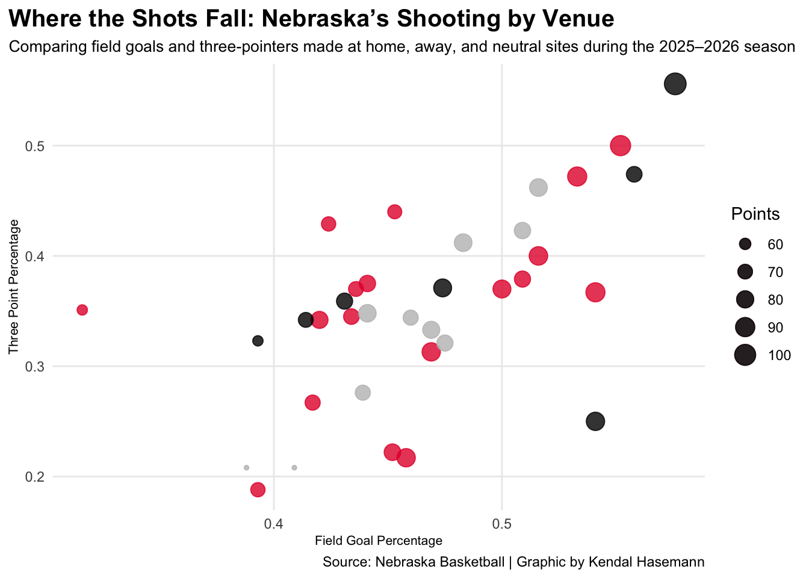
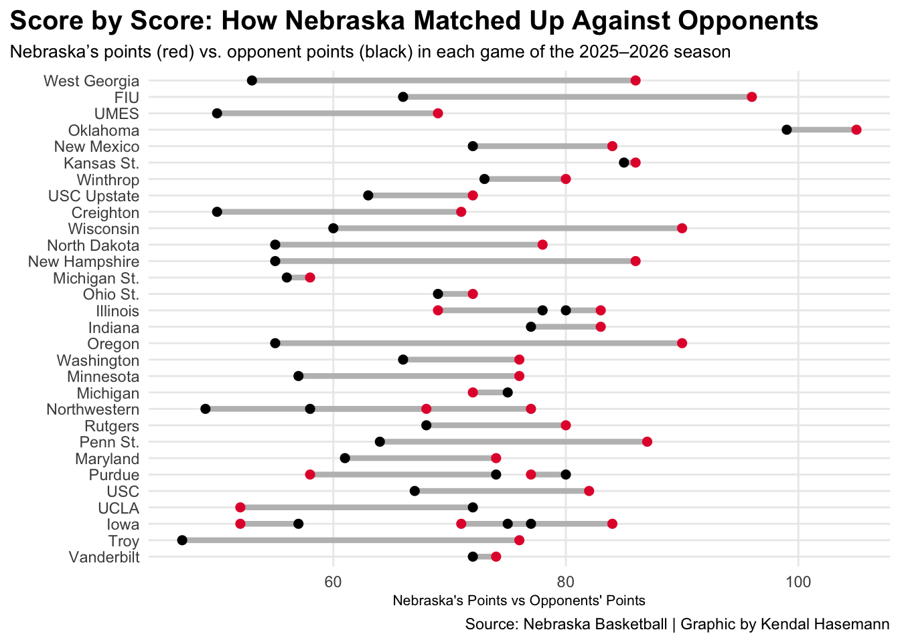
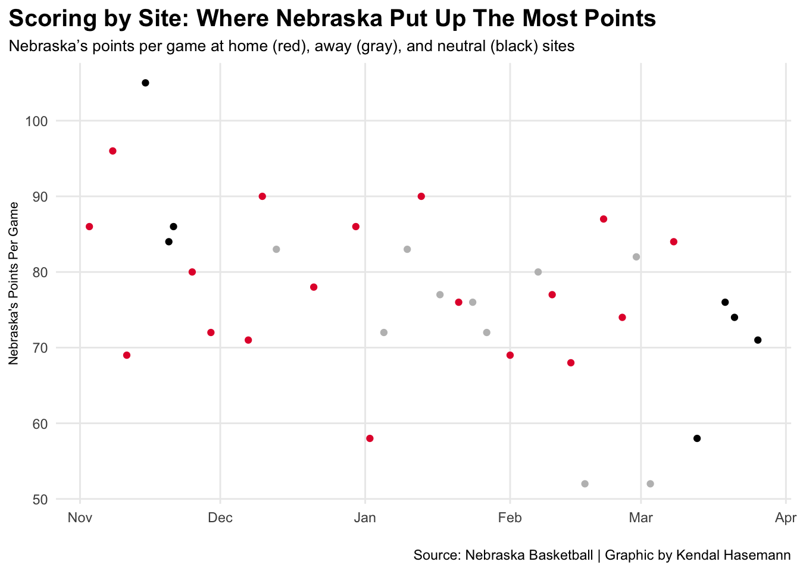

Is There Truly Such Thing as a Home Court Advantage? Let’s see if Pinnacle Bank Arena actually gave the Huskers a one up against their opponents this past basketball season.
Winning on the road is one of the hardest things to do in college basketball. Players face unfamiliar arenas, hostile crowds, and travel fatigue can quickly affect the way a team performs. For Nebraska during the 2025-2026 season, location mattered more than ever.
The Huskers were a strong team overall, but their best basketball was consistently at home. Whether it was shooting efficiency, defensive pressure, or simply just out scoring their opponent. Nebraska looked sharper and stronger when playing at Pinnacle Bank Arena compared to anywhere else.
Code
library(tidyverse)library(dplyr)library(patchwork)nebball <-read_csv("data/nebraskabasketball2526.csv") |>mutate(DATE =mdy(DATE))home <- nebball |>filter( LOCATION =="Home" )away <- nebball |>filter( LOCATION =="Away" )neutral <- nebball |>filter( LOCATION =="Neutral" )ggplot() +geom_point(data=home, aes(x=PCT, y=`3PCT`, size=PTS), color="#e41c38", alpha=.8) +geom_point(data=away, aes(x=PCT, y=`3PCT`, size=PTS), color="grey",alpha=.8) +geom_point(data=neutral, aes(x=PCT, y=`3PCT`, size=PTS), color="black",alpha=.8) +scale_size(name ="Points") +labs(title ="Where the Shots Fall: Nebraska’s Shooting by Venue",subtitle ="Comparing field goals and three-pointers made at home, away, and neutral sites during the 2025–2026 season",x ="Field Goal Percentage",y ="Three Point Percentage",caption ="Source: Nebraska Basketball | Graphic by Kendal Hasemann" ) +theme_minimal() +theme(plot.title =element_text(size =15, face ="bold"),plot.subtitle =element_text(size =10),axis.title =element_text(size =8),panel.grid.minor =element_blank(),plot.title.position ="plot" )

Code
ggsave("image.png")
The clearest sign of Nebraska’s home court advantage comes from its offense. The shooting graph shows that home games were clustered in strong scoring zones, with better field goal percentages and more three-pointers made than most road or neutral site performances. Several of the Huskers’ biggest offensive performances were in Lincoln, where they were able to combine efficient shooting with a greater amount of points scored.
On the other hand, road games were a little more scattered. Some performances were strong, but overall Nebraska’s shooting was less consistent away from home. Neutral site games were more in the middle, still showing efficiency but without the same reliability as home games. Their strong performance offensively most likely came from familiarity with their environment. Teams often shoot better in their own arena because of routine, home crowd energy, and increased confidence. Nebraska’s data strongly suggests that was the case.
But scoring efficiency was only part of the story. The Huskers also separated themselves from opponents more by playing more consistently when on their home court.
Code
ggplot() +geom_segment(data=nebball, aes(y=reorder(OPPONENT, desc(DATE)), yend=OPPONENT,x=PTS, xend=OPPONENTPTS),color="grey",linewidth =1.5, ) +geom_point(data=nebball,aes(y=OPPONENT,x=PTS,color="Nebraska Points" ), color="#e41c38",size=2 ) +geom_point(data=nebball,aes(y=OPPONENT,x=OPPONENTPTS,color="Opponent Points" ), color="black",size=2 ) +labs(title ="Score by Score: How Nebraska Matched Up Against Opponents",subtitle ="Nebraska’s points (red) vs. opponent points (black) in each game of the 2025–2026 season",x ="Nebraska's Points vs Opponents' Points",y ="",caption ="Source: Nebraska Basketball | Graphic by Kendal Hasemann" ) +theme_minimal() +theme(plot.title =element_text(size =15, face ="bold"),plot.subtitle =element_text(size =10),axis.title =element_text(size =8),panel.grid.minor =element_blank(),plot.title.position ="plot" )

The second graph compares Nebraska’s points to opponent points for each game. In many match ups, the Huskers’ scoring mark sits above their opponents’. Those larger spreads often appeared during home games where Nebraska was able to control the tempo and create distance on the scoreboard.
When Nebraska traveled, the margins were noticeably closer. Several road games were close in score, with the Huskers needing to fight tooth and nail at the end of games rather than asserting early dominance. Even when they won on the road the scoring gap was smaller than many of their home wins.
Code
ggplot() +geom_point(data=home, aes(x=DATE, y=PTS), color="#e41c38") +geom_point(data=away, aes(x=DATE, y=PTS), color="grey") +geom_point(data=neutral, aes(x=DATE, y=PTS), color="black") +labs(title ="Scoring by Site: Where Nebraska Put Up The Most Points",subtitle ="Nebraska’s points per game at home (red), away (gray), and neutral (black) sites",x ="",y ="Nebraska's Points Per Game",caption ="Source: Nebraska Basketball | Graphic by Kendal Hasemann" ) +theme_minimal() +theme(plot.title =element_text(size =15, face ="bold"),plot.subtitle =element_text(size =10),axis.title =element_text(size =8),panel.grid.minor =element_blank(),plot.title.position ="plot" )

The third graph reinforces that trend by showing the Huskers’ points per game throughout the season based on the location. Home games, in red, show many of the team’s highest scoring games, including several games that were in the 80 to 90 point range. Away games, in gray, averaged around 70 points per game, and neutral games, in black, produced more mixed results.
Together, these graphs suggest that Nebraska’s offense was more powerful at home. The Huskers didn’t just win more games at home, they won by bigger margins. And the final graph shows how that was possible.
Basketball games are often decided by possessions and execution. Nebraska’s home numbers in rebounds and assists reveal a team that played with more control and efficiency in Lincoln.
At home, the Huskers regularly posted stronger rebounding totals, creating second chance opportunities while limiting their opponents’. Assist numbers also reflected a smoother offense, where ball movement led to easier buckets.
Those categories matter because they often lead to wins. More rebounds means more possessions and opportunities. More assists means better shots and a more efficient offense.
Together, they paint the picture of a team that was elevated by its environment. Nebraska was strong almost everywhere during the 2025-2026 season, but they were at their best in Lincoln. The Huskers shot better, had more control, and made more winning plays at home.
In a sport where every edge matters, Pinnacle Bank Arena gave Nebraska one of its biggest advantages throughout the entirety of the season.